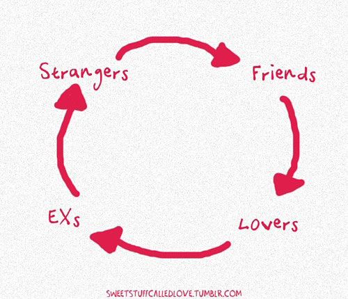

High Perf JS
Under construction
started: but incomplete
- local variable: how function is get executed 1, 2, 3
- why filter slow, also forEach, every, some, any
- parseInt, and any other number related perf
- search for object/method related performance
- DOM: why removeNode is faster than innerHTML
- Create DOM
- repaint flow, example: might borrow from HMTL tree
- style manipulaton: request animationFrame, etc
- unbind event: memoryleak, flight.js, devTool event
- more about garbase collection
- localStorage and persistance
- Scroll
- multi threader JS
- profile and memory leak debug
Need to start: TODO
- kyle: u dont know js
- ben Alman: partial application
- inhertiance problem: create vs prototype: 1
- anonymous and prototype
- closure, closure: memory leaks
- html5 js api index
- book: eloquent JS, ninja
- source code: jquery, angular or backbone
- memory leak
- queue and limit slide 22
- runaway script timer limit slide 41
- fibonacci
- addition
- module pattern: 1, mixin, 3, 4
- must: how js tag stop parsing of html
why performance
add images and build a story


How you get a website
Websites

High Perf Network

High Perf Network

Mega Performance
boost

Small is Big

Every byte counts
Every byte will bite!
1. Minify
//205 bytes
//When I wrote this, only God and I understood what I was doing
//Now, God only knows
var myFancyObject = {aaaa:1, bbbb:2, cccc:3}
function logTable(obj) {
console.table(obj);
}
logTable(myFancyObject);
//103 bytes
var myFancyObject={aaaa:1,bbbb:2,cccc:3};function logTable(a){console.table(a)}logTable(myFancyObject);
//23 bytes
console.table({a:1,b:2,c:3});JS Compress, Uglify, JS Min
2. Combine
<script src="underscore.js" type="text/javascript"></script>
<script src="jquery.js" type="text/javascript"></script>
<script src="backbone.js" type="text/javascript"></script>
<script src="upperscore.js" type="text/javascript"></script>
<script src="frontbone.js" type="text/javascript"></script><script src="allScripts.js" type="text/javascript"></script>CommonJS, Require JS
Give the load to Grunt!
http://yeoman.io3. Load Less
load as little as possible
if u need it later load later or async
Async Vs Defer
Dont block
<script src="file-a.js"></script>
<script src="file-b.js" defer></script>
<script src="file-c.js" async></script>

Async Vs Defer
Small in line
Good for Mobile device
4. Right Order
<!doctype html>
<html>
<head>
<link rel="stylesheet" href="reveal.css">
<head>
<body>
<div class="awesomeDiv">
<h2>unnecessary title</h2>
<div>
<p>unnecessary content</p>
</div>
</div>
<script src="allScripts.js">
</body>
<html>
Style on Top
Script on bottom
Properly include style and scripts
5. Cache
browser or CDN

6. gZip

7-zip
Tiny stuffs
Things to do or not to
JS: advices
- jsLint, jsHing
- Best Practice
- standard
- What does the Boss say?
- framework suggestion
- add more to this list
Performance trap
performance improvement strategy
- Understand the situation/ use case
- Is it a performance/ design problem?
- Don't blindly go for blog/ talk/ boss
- Measure it (before, after)
- Make sure u understand after 6 months

local Variable
get something from David Sharif. about execution context
- When a function is executed an execution context is created and an activation object containing all local variables is pushed to the front of the context's scope chain.
- Further in the chain, the slower the identifier resolution is, which means local variables are fastest.
- By storing local references to frequently used out-of-scope variables reading and writing to variables is significantly faster. This is visible especially with global variables and other deep searches for identifier resolution.
- Also in-scope variables (var myVar) are faster than object property access (this.myVar).
store out of scope variable
var myArr = [0, 1, 2,3 4, 5 ...];
function useGlobal() {
for (j = 0; j < 1000; j++)
console.log(myArr[j]);
}
function useLocal() {
var localArr = myArr;
for (var k = 0; k < 1000; k++)
console.log(localArr[k]);
}
cache outside for loop
for(var i = 0; i < someArray.length; i++) {
var container = document.getElementById('container');
container.innerHtml += 'my number: ' + i;
console.log(i);
}
when value doesnt change
var container = document.getElementById('container');
for(var i = 0; i < someArray.length; i++) {
container.innerHtml += 'my number: ' + i;
console.log(i);
}
access object property
var a = [{ z: 1 }, { z: 2 }],
sum = 0,
el;
for(var i =0; i < 1000; i++){
el = a[i%2];
sum += el.z;
sum += el.z;
sum += el.z;
sum += el.z;
sum += el.z;
}
cache properties
var a = [{ z: 1 }, { z: 2 }],
sum = 0,
val;
for(var i =0; i < 1000; i++){
val = a[i%2].z;
sum += val;
sum += val;
sum += val;
sum += val;
sum += val;
}
getter caching
loop
for loop (mostly used)
for(var i = 0; i < 5; i++){
console.log(i);
}
for(initiation; iteratingCondition; repeatingExpression){
repeatingCode;
}
all parts are optional
but u have to put the semicolon
initiation;
would be executed only once
var myArr = [1, 2, 3, 4, 5];
for(var i =0; i< myArr.length; i++){
console.log(myArr[i]);
}
//length is calculated once
for(var i =0, len = myArr.length; i<len; i++){
console.log(myArr[i]);
}
skip initiation
(hoisting)
var myArr = [1, 2, 3, 4, 5],
i = 0,
len = myArr.length;
for ( ; i < len; i++ ) {
console.log(myArr[i]);
}
iteratingCondition
var myArr = [1, 2, 3, 4, 5],
len = myArr.length;
for(var i =0; i<len && i<3; i++){
console.log(myArr[i]);
}
//assign variable
//TODO: this doesnt work. modify it
var myArr = [1, 2, 3, 4, 5];
for (var i=0, item; item = myArr[i]; i++) {
console.log(item);
}
//skip condition
var i = 0;
for(;;i++){
console.log(i);
if(i==5) break;
}
//TODO: put it in the right flow
var myArr = [1, 2, 3, 4, 5],
i = myArr.length;
for (var sum = 0; i-- || console.log(sum); sum += myArr[i]);
//15
do as little as possible in each loop
//add an example for this
for loop extra

forward or backward
var myArr = [0,1,2,3,4,5 ...];
//forward
for(var j = 0; j<1000; j++){
console.log(myArr[j]);
}
//backward
for(var k = 1000; k>=0; k--){
console.log(myArr[k]);
}
dont worry about it for a smaller array
js perf: backward testfor loop backward
cache function
var arr = [];
for (var i = 0; i < 1000; i++) {
arr.push([1, 2, 3].map(function (x) { return x * x; }));
}
var arr = [];
var sq = function (x) { return x * x; };
for (var i = 0; i < 1000; i++) {
arr.push([1, 2, 3].map(sq));
}
filter vs if
var myArray = [{"number":1,"name":"Fred"},{"number":2,"name":"John"},{"number":3,"name":"Toni"},{"number":4,"name":"Sarah"}];
function byFilter(myArr, num){
return myArr.filter(function (el) {
return el.number === num;
});
}
function byForLoop(myArr, num){
var i, l;
for (i = 0, l = myArr.length; i < l; i += 1) {
if (myArr[i].number === num) {
return [myArr[i]];
}
}
return [];
}TODO: why filter is slow
check forEach, some, every, any
For in
"Iterates over the enumerable properties of an object, in arbitrary order" - MDN
for (var variable in objectExpression) {statement}
- statement is optional
- var can be declared outside
var myObj = {a:1, b:2, c:3};
for(var key in myObj){
console.log(myObj[key]);
}
// 1, 2, 3
enumerates inherited properties
var myObj = {a:1, b:2, c:3};
var mySon = Object.create(myObj);
mySon.d = 4;
mySon.e = 5;
for(var key in mySon){
console.log(mySon[key]);
}
// 4, 5, 1, 2, 3
for(var key in mySon){
if(mySon.hasOwnProperty(key)){
console.log(mySon[key]);
}
}
//4, 5
cache hasOwnProperty
var i,
obj = {},
hasOwn = Object.prototype.hasOwnProperty;
for(var j = 0; j<10000; j++){
obj[j] = j;
}
for (i in obj) {
if (hasOwn.call(obj, i)) {
console.log(i, ":", obj[i]);
}
}
not a performance gain for modern browsers
cache hasOwnPropertycoerce to object
var myArr = [10, 20, 30];
for(var idx in myArr){
console.log(myArr[idx])
}
//10, 20, 30
var foo = 'bar';
for(var idx in foo){
console.log(foo[idx])
}
//b, a, r
What is the sum?
var numbers = [10, 20, 30];
var sum = 0;
for(var num in numbers){
sum += num;
}
console.log(sum); //?
console.log(sum); //0012
- Always enumerates the keys
- Keys always string
for vs for-in
var myArr = [1, 2, 3, 4, 5, ... ];
//faster
for(var i =0; i<1000; i++){
console.log(myArr[i]);
}
//than
for(var j in myArr){
console.log(myArr[j]);
}
dont use for-in while traversing on an array
for vs for-inOther looping
while, do while
var myArr = [1,2,3,4,5,6,7,8,9],
len = myArr.length,
i =0;
while (i++ < len) {
console.log(myArr[i]);
}
var i = myArr.length -1;
do {
someFn(arr[i]);
} while (i--);
reverse while
var l = arr.length;
while(l--) {
someFn(arr[l]);
}
- Even faster than reverse for loop
different looping
summary of looping
- don't measure length in every iteration
- cache object properties, function used in repeatingCode
- backward for loop is faster than forward
- for-in only when iterating over object
- on array, reverse while is the fastest
String

String Concatenation
var tinyMessage = 'Trust me, i started one line' +
'Designer told me he wants little more' +
'I added little more' +
'Manager said, this is not enough' +
"He didn't said what to add" +
'Just said add' +
"I didn't know what to add" +
'So i added a slice of pizza' +
'Client said this is stupid' +
'Manager said, client is right';
[ ].join(' ')
var tinyMessage = ['Trust me, i started one line',
'Designer told me he wants little more',
'I added little more',
'Manager said, this is not enough',
"He didn't said what to add",
'Just said add',
"I didn't know what to add",
'So i added a slice of pizza',
'Client said this is stupid',
'Manager said, client is right'].join(' ');
Why is string concatenation faster than array join
fastest-way-to-build-this-string
StringBuilder
var strBuilder = [];
for (var i = 0; i < 20; i++) {
strBuilder.push( i, '=', fibonacci(i));
}
return strBuilder.join(' ');
primitive vs Object
var strPrimitive = 'Hello';
var strObject = new String('Hello');
primitive is faster
- length
- charAt()
- indexOf()
- toUpperCase()
- concatenate
MDN: performance of JS String Object
Number
parseInt
use parseIntArray
when to use Array
- Same Type
- Use Full Array
- Avoid Pre-allocate
- Grow as you Go
Type Inference Performance, Sparse vs Full Arrays, Pre-allocated Arrays
How to Create Array
var a = []; // empty
var b = new Array(); //empty
var c = [1,2];
var d = new Array(5); // array of size 5
var e = new Array(5, 10); //array of two element
- literal will always produce array: just execute
- constructor is a function call plus execution, argument check
- create with elements if you know
literal vs new
array initialize
a = []; // executor knows nothing
for(var i = 1; i <= 4; i++) {
a.push(i);
}
// just do it:
var a = [1, 2, 3, 4];
var myArray = [1, 2, 3, 4, 5, 6]; //myArray.length = 6
delete myArray[2];
myArray; //[1, 2, undefined × 1, 4, 5,6]
console.log(myArray.length); // 6
console.log(myArray[2]); // undefined
push vs assign
var a = [], b = [];
//push
for (var i = 0; i<1000; i++){
a.push(i);
}
//assign by index
for (var j = 0; j<1000; j++){
b[j] = j;
}
be careful with assign
var myArr = [1, 2, 3, 4];
myArr[68] = 69;
myArr.length; //69
myArr; //[1, 2, 3, 4, undefined × 64, 69]
var myArr = [1,2,3,4];
myArr[-7] = -7;
myArr[2.5] = 3.5;
myArr['myDude'] = 'thatJSDude';
myArr.length;//4
myArr; //[1, 2, 3, 4]
these becomes property of myArr
Array: that js dudepush multiple
var a = [1, 2];
a.push(3, 4, 5);
a; // [1, 2, 3, 4, 5]
a.unshift(0);
a.unshift(-2, -1);
a; //[-2, -1, 0, 1, 2, 3, 4, 5]
var b = [1, 2, 3, 4, 5, ...];
b.indexOf(669);
b.indexOf(669, 500);
b.lastIndexOf(303);
b.lastIndexOf(303, 500);
Array summary
- [] is faster than new Array()
- a[index] is faster a.push
- push, unshift multiple
- fromIndex of indexOf
- prefer new array over many splice
Object
When to use Object
- Varying types properties
- Integer-indexed Objects is always faster
- Use Object.Create()
Object.create() vs. constructor vs. object literal
Add more object related perf
== or ===
equal or not
!= or !==
What the difference?
== and != try to coerce values before comparing (can lead to unexpected results)
=== and !== don't do any coercion (generally safer)
jshint#eqeqeq: prohibits the use of == and != in favor of === and !==.
older browsers === and !== was faster (not in modern browser)
js hint options, equality perf testHow == works?
[0] == true;
//convert boolean using toNumber
[0] == 1;
//convert object using toPrimitive
//[0].valueOf() is not a primitive so use...
//[0].toString() -> "0"
"0" == 1;
//convert string using toNumber
0 == 1; //false!
"potato" == false; //false
"potato" == true; //false
"potato" == true;
//convert boolean using toNumber
"potato" == 1;
//convert string using toNumber
NaN == 1; //false!
"potato" == false;
//convert boolean using toNumber
"potato" == 0;
//convert string using toNumber
NaN == 0; //false!
Which one? === or ==
0 == ''; // true
0 === false; //false
if (( x === null) || (x === undefined)){ ... }
if(x == null) { ... }
When you don't actually know whether they are same type
typeof thing == 'function'; //always be string
myArray.length == 0; //will always be number
mySting.indexOf('x') == 0;
Inheritance
ways to create inheritance
four different wasyMDN: perf at bottom
js perf
inheritance perfmight get something
function callsimple
function prototypal
DOM query
DOM query
- getElementById
- getElementsByClassName
- getElementsByName
- getElementsbyTagName
- getElementByTagNameNS
- querySelector
- querySelectorAll
use wisely
<div>
<article>
<p></p>
</article>
<article >
<span id="myId" class="myClass">my text</span>
</article>
</div>
- id is the fastest
- querySelectorAll()[0] is the slowest
Access DOM
var blah = document.getElementById('myID');
var blah2 = document.getElementById('myID2');
var blah3 = document.getElementById('myID3');
var blah = document.getElementById('myID'),
blah2 = document.getElementById('myID2'),
blah3 = document.getElementById('myID3');
var doc = document,
blah = doc.getElementById('myID'),
blah2 = doc.getElementById('myID2'),
blah3 = doc.getElementById('myID3');
cache querySelector
<div class="awesome-selector">
<div class="inner-1"></div>
<div class="inner-2"></div>
<div class="inner-3"></div>
</div>
var awesome = document.querySelector('.awesome-selector');
var h1 = awesome.querySelector('.inner-1');
var h2 = awesome.querySelector('.inner-2');
var h3 = awesome.querySelector('.inner-3');
querySelectorAll
returns NodeList of elements using depth-first pre-order traversal
querySelectorAll
document.querySelectorAll('input, button');
// get the elements
var inp = document.getElementsByTagName('input');
var but = document.getElementsByTagName('button');
// change the NodeList to array
var inpArr = Array.prototype.slice.call(inp);
var butArr = Array.prototype.slice.call(but);
// Join the arrays
var all = inpArr.concat(butArr);
select by attribute value
<div>
<span data-control="true">Something, Darkside</span>
</div>
document.querySelectorAll('[data-control]');
getElementByAttributeValue('data-control');
function getElementByAttributeValue(attribute)
{
var allElements = document.getElementsByTagName('*');
for (var i = 0; i < allElements.length; i++)
{
if (allElements[i].getAttribute(attribute))
{
return allElements[i];
}
}
}
why not a class
<div>
<span class="data-control" data-control="true">Something, something, something, Darkside</span>
</div>
document.getElementsByClassName('data-control');
removeNode
prefer removeNode() over innherHTML = ''
TODO: why this is happen???
el.innerHTML = '';
//or
el.innerHTML = null;
//prefer
function emptyDOM(el) {
var child;
while (child = el.lastChild) {
el.removeChild(child);
}
}
Create DOM
ways to create DOM
do little more researchlaconic, crel
$('<div class=”imAMoron”><span>derp</span></span>');
vs document.createElement
DOM creation libraries comparisontext node
text nodeempty node
empty nodecreateDocumentFragment
var list = ['foo', 'bar', 'baz'],
elem, contents;
for (var i = 0; i < list.length; i++) {
elem = document.createElement('div');
content = document.createTextNode(list[i]);
elem.appendChild(content);
document.body.appendChild(elem);
}
var fragment = document.createDocumentFragment(),
list = ['foo', 'bar', 'baz'],
elem, contents;
for (var i = 0; i < list.length; i++) {
elem = document.createElement('div');
content = document.createTextNode(list[i]);
fragment.appendChild(content);
}
document.body.appendChild(fragment);cloneNode
if no event handler or form element
var orig = document.getElementById('container'),
clone = orig.cloneNode(true),
list = ['foo', 'bar', 'baz'],
elem, contents;
clone.setAttribute('width', '50%');
for (var i = 0; i < list.length; i++) {
elem = document.createElement('div');
content = document.createTextNode(list[i]);
elem.appendChild(content);
clone.appendChild(elem);
}
original.parentNode.replaceChild(clone, original);
DOM vs innerHTML
Templating JS vs Mustache
//add code example here
Mustache Manual
JS templating shootoff: important
repaint reflow
Determining dimensions or location of elements via getComputedStyle, offsetWidth, scrollWidth and clientWidth properties will force reflow. If you take the measurements repeatedly, consider taking them only once.reflow and repaint
Summary
- Minimize the size of DOM
- avoid modifying while traversing
- Dont ask for size while changing
- Clone Node and dereference aftr clone
- Minimize reflow and repaint
- css class vs style attribute
Style manipulation
Make multiple predefined style changes at once using className
Make multiple dynamic style changes at once using setAttribute
var elem = document.getElementById('styled');
elemStyle = 'background: blue; color: white;';
elem.setAttribute('style', elemStyle);
animation
animate.cssscrollTO
//ggl JavaScript scrollTo and learn about it
multiple timers
If multiple elements are animated at the same time, the best frame rate is achieved by iterating across all animated elements inside a single loop. Using multiple timers makes animation less efficient and consistent, presumably due to timer invocation overhead.
animations
By default elements have style property position: static and animating such elements causes reflowing of the layout and is expensive. Elements to be animated should be set as position: absolute or position: fixed if reflowing is not mandatory for smoother animation and lesser CPU load. Such elements do not affect other elements layout, so they will only cause a repaint rather than a full reflow with a nice performance boost.something about animation
talk about animation basics
animation basics part-1, part-2requestFrame
Events

Bubble demo, w3: event flow (image)
event delegate
<ul id="listToDestroy">
<li><a href="#">first item</a></li>
<li><a href="#">second item</a></li>
<li><a href="#">third item</a></li>
<li><a href="#">forth item</a></li>
<li><a href="#">Fifth item</a></li>
</ul>
<script type="text/javascript">
document.getElementById('listToDestroy').addEventListener('click', function (e) {
var elm = e.target.parentNode;
elm.parentNode.removeChild(elm);
e.preventDefault();
});
</script>
event delegate (demo)
event object
- target
- preventDefault
- stropPropagation
- stopImmediatePropagation
- timestamp
- clientX, clientY
intro to DOM event: The Event Object
unbind eventhandler: memory leak
flight.js
flight.jsdev tool: binded events to a dom
watch all the three videos and pick stuff
Garbage

Holding references
function getLargeThing (x) {
var a = function () {
var largeStr = new Array(1000000).join('x');
return function () {
return largeStr;
};
}();
JSPerf: Closure vs Shared method
Trust Arguments
if (callback && typeof callback === "function"){
/* rest of your logic */
}else{
/* not a valid function */
}
Momoization
Memoization
var fibonacci = function (n) {
return n < 2 ? n : fibonacci(n - 1) + fibonacci(n - 2);
};
for (var i = 0; i <= 10; i += 1) {
console.log( i + ': ' + fibonacci(i));
}
// 0: 0
// 1: 1
// 2: 1
// 3: 2
// 4: 3
// 5: 5
// 6: 8
// 7: 13
// 8: 21
// 9: 34
// 10: 55
JavaScript: Good Parts
var fibonacci = (function () {
var memo = [0, 1];
var fib = function (n) {
var result = memo[n];
if (typeof result !== 'number') {
result = fib(n - 1) + fib(n - 2);
memo[n] = result;
}
return result;
};
return fib;
})();
General Memoization
Function.prototype.memoize = function(){
var self = this, cache = {};
return function( arg ){
if(arg in cache) {
console.log('Cache hit for '+arg);
return cache[arg];
} else {
console.log('Cache miss for '+arg);
return cache[arg] = self( arg );
}
}
}
Implement general Memoize
function fooBar(a){ ... }
// once a memoizer is available, usage is as simple as
var memoFooBar = fooBar.memoize();
memoFooBar(1);
// are conducted. This result is then cached for next time.
memoFooBar(1); // will now return the cached result
memoFooBar(2); // whilst this will need to be calculated
caching
localStorage
something to start withJavaScript Others
Reduce Global
var current = null;
function init(){...}
function change(){...}
function verify(){...}
var myNameSpace = {
current:null,
init:function(){...},
change:function(){...},
verify:function(){...}
}
myNameSpace.init();
Develop with Namespace
JS 24 best practices
Self executing
(function(){
var current = null;
function init(){...}
function change(){...}
function verify(){...}
})();
(function( skillet, $, undefined ) {
//Private Property
var amountOfGrease = "1 Cup";
//Public Method
skillet.toString = function() {
console.log( skillet.quantity + " " +
skillet.ingredient + " & " +
amountOfGrease + " of Grease" );
console.log( isHot ? "Hot" : "Cold" );
};
}( window.skillet = window.skillet || {}, jQuery ));
Re-think try-catch
 Rethink: Try-catch
Rethink: Try-catch
JSPerf: try-catch vs if check
JS: try catch vs Error checking
Why Empty catch block is bad
add this code
try catch perfUse Strict Mode
// Non-strict code...
(function(){
"use strict";
// Define your library strictly...
})();
// Non-strict code...
timeout for ajax call
var xhr = new XMLHttpRequest ();
xhr.open('GET', url, false);
xhr.onreadystatechange = function () {
if (this.readyState == 4) {
clearTimeout(timeout);
// do something with response data
}
}
var timeout = setTimeout(
function () {
xhr.abort();
// call error callback
},
60*1000 // timeout after a minute
);
xhr.send();
Know JavaScript Engine
- Know V8
- Hidden Class
- Avoid Memory Leaks
- Compile browser
Memory Efficient JS
JQuery
Selector Repetition
$('#myText').css("color", "blue");
$('#myText').css("font-size", "1.2em");
$('#myText').text("Text changed!");
//chain it or cache it
$('#myText').css({ "color": "blue", "font-size": "1.2em"}).text("Text changed!");
//better
.myClass{
color:blue;
font-size:1.2em;
}
//apply class not style
$('#myText').addClass('myClass').text("Text changed!");
Efficient JQuery Selector
Use Sub queries
<ul class="nav">
<li>List 1, item 1</li>
<li>List 1, item 2</li>
<li>List 1, item 3</li>
</ul>
<ul class="nav">
<li>List 2, item 1</li>
<li>List 2, item 2</li>
<li>List 2, item 3</li>
</ul>
$( "ul.nav li:eq(1)" ).css( "backgroundColor", "#ff0" );
//better
$( "ul.nav" ).each(function( index ) {
$( this ).find( "li:eq(1)" ).css( "backgroundColor", "#ff0" );
});15-powerful-jquery-tips
<ul id="resources">
<li><a href="http://developer.mozilla.org">MDN</a></li>
<li><a href="http://html5doctor.com">HTML5 Doctor</a></li>
<li><a href="http://html5rocks.com">HTML5 Rocks</a></li>
</ul>
$( "#list a" ).on( "click", function( event ) {
event.preventDefault();
console.log( $( this ).text() );
});Doesn't work if you add a new list item
$( "#list" ).on( "click", "a", function( event ) {
event.preventDefault();
console.log( $( this ).text() );
});
JQuery Event Delegation
simultaneous ajax
multiple ajaxJquery Also !
Right to left
Jquery Right to left
Your jQuery: Now With 67% Less Suck
JSPerf: Jquery Right to Left
Why Right to Left
You might not need
JQuery
Are you ready?
$(document).ready(function () {
console.log('document is ready. I can sleep now');
});Script as Last Tag of body
document.addEventListener('DOMContentLoaded', function(){
console.log('document is ready. I can sleep now');
});
document.onreadystatechange = function () {
if (document.readyState == "complete") {
console.log('document is ready. I can sleep now');
}
}Copy ready: function from JQuery
5-things-you-should-stop-doing-with-jquerydeal with class
$(el).addClass('hide');
$(el).removeClass('hide');
$(el).toggleClass('hide');
$(el).hasClass('hide');
//IE9+
el.classList.add('hide');
el.classList.remove('hide');
el.classList.toggle('hide');
el.classList.contains('hide');
jQuery helpers
$(el).hide();
el.style.display = 'none';
$(el).show();
el.style.display='';
$(el).html();
el.innerHTML;
$(el).html(setString);
el.innerHTML = setString;
$(el).empty();
el.innerHTML = '';
$(el).text();
el.textContent;event listener
$(el).on(eventName, eventHandler);
$(el).on('click', function(e){
console.log(e.target);
})
//remove event
$(el).off(eventName, eventHandler);
//IE9+
el.addEventListener(eventName, eventHandler);
el.addEventListener('click', function(e){
console.log(e.target);
});
el.removeEventListener(eventName, eventHandler);
DOM manipulation
$(el).parent();
$(el).children();
$(el).next();
$(el).prev();
$(parent).append(el);
$(el).remove();
$(el).clone();
el.parentNode;
el.children;
el.nextElementSibling;
el.previousElementSibling
parent.appendChild(el);
el.parentNode.removeChild(el);
el.cloneNode(true);
Is JQuery is Dead?
- Older Browser
- Browser Bugs
- use modular (sizzling)
- querySelctorAll dont have map, each, filter
- Angular, Backbone uses Jquery
- lazy (dont want to larn new framework)
- legacy code
Decide based on your situation
Scroll
scroll problem
scroll spy
infinite scroll
Jank
jank layers hover scrollJank Invaders
Debugging and Fixing Jank
Jank Free
Scroll could be scary!
Scrolling Performance
unnecessary Paints
Something else make Scroll bad!
- position:fixed
- overflow:scroll
- :hover effect
- touch listeners
- Image resize
requestAnimationFrame (rAF)
Browser dynamically adjust to keep frame rate normal.
Decouple events from animation
Avoid animation that causes reflow-repaint loops
HTML5: faster rFArFA API: sub milisecond precision
can i use: rFA
Parallax
window.onscroll = function(e) {
var parallax = document.getElementById('parallax-background');
parallax.style.marginTop = (window.scrollY/2) + 'px';
}
window.onscroll = function(e) {
// could use prefixes: webkitTransform, mozTransform etc.
var parallax = document.getElementById('parallax-background');
parallax.style.transform = 'translate3d(0px,' + (window.scrollY/2) + 'px, 0px)';
}
Debounce & Throttle
Defer
Debounce: Example
multi threaded JavaScript
web worker
talk about other libraries
Performance Debug
JS ProfilingProfiles
Performance Secret: Peter Flynn
cpu profiling
Console API
//test
console.assert(myArray.length >5, "More than 5 elements");
//hit count
console.count("Number of times entered");
//JS represents of Obj
console.dir(document.body);
//trace
console.trace();
Console API
More Console
console.time("Array initialize");
var array= new Array(1000000);
for (var i = array.length - 1; i >= 0; i--) {
array[i] = new Object();
};
console.timeEnd("Array initialize");
Performance Debug
var start = performance.now();
//execute your function
foobar();
var end = performance.now();
console.log(start - end +'ms');
Rectangle
Settings
Memory Profiling
JS Memory ProfilingLong paint times profiling
Effective Memory management
Leak Finder
chrome://tracing
Tracing paint operationsTracing Flag
don't shoot urself
decide what works for you and your team
combined var !
var foo,
fooed,
fooled;
var foo = 'bar';
//after something
var fooed = 'inside the bar';
//after something else
var fooled = 'by the smart guy';
- u decide: micro save or readable
- es6:
let
risk of combined var
var foo,
fooed
fooled;
var a = 7,
b = c = 6;
When optimizing
walk through a requirement
table event handler exampleBreak Everything
I have said
\
/
As Long As YOU know what YOU ARE doing
Break All the Rules
Review Your Code
JSMentorsCode Review
Recap
mega Performance
- Minify
- Combine
- Load Less
- Right Order
- Cache (browser, CDN)
- gZip
mini performance
promise().then()
JavaScipt NinjaUnderScore or JQuery source code
High Performance Browser Network
asm.js: JS compile Target
Lo-dash
Code Level Performance Data
Take Away
- Nothing is absolutely right
trust Tools, not Rules
Angus Croll: Break all the rules

Free Tip

Thank You
http://bit.ly/1gx0FRU
MD Khan / @mdkhan005